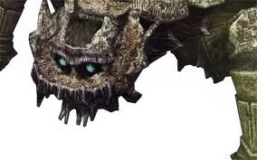

Basaran es el noveno coloso en "Shadow of the Colossus". Este coloso se asemeja a una gigantesca tortuga acorazada y se encuentra en una cueva rodeada de géiseres. Para derrotarlo, el jugador debe utilizar los géiseres para voltear a Basaran y revelar sus puntos débiles, aprovechando la oportunidad para escalarlo y atacarlo.

Basaran en PS2/PS3